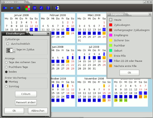

cycle
Dieser Artikel wurde für die folgenden Ubuntu-Versionen getestet:
Ubuntu 16.04 Xenial Xerus
Ubuntu 14.04 Trusty Tahr
Zum Verständnis dieses Artikels sind folgende Seiten hilfreich:
|  |
| Cycle |
Cycle  ist ein Kalenderprogramm für Frauen, mit dem sich der Menstruationszyklus protokollieren und voraussagen lässt. Es kann damit eine Natürliche Familienplanung (NFP) unterstützen.
ist ein Kalenderprogramm für Frauen, mit dem sich der Menstruationszyklus protokollieren und voraussagen lässt. Es kann damit eine Natürliche Familienplanung (NFP) unterstützen.
Funktionen:
Datum der nächsten Pille
Datum des Beginns des nächsten Zyklus
Anzeige fruchtbarer Tage
Anzeige der sicheren Tage für Geschlechtsverkehr
Vorhersage Geburtstermin
Dabei müssen nur wenige Daten von Hand eingepflegt werden. So kann die Dauer des Menstruationszyklus entweder selbst festgelegt oder durch das Programm ermittelt werden. Anschließend muss dem Programm nur noch regelmäßig mitgeteilt werden, wann die letzte Pille genommen wurde bzw. wann die letzte Menstruation war.
Achtung!
Die vom Programm benutzte Kalendermethode zur Vorhersage der Tage mit sicherem Geschlechtsverkehr ist mit einem Pearl-Index von 9 relativ unsicher und sollte nicht zur alleinigen Verhütung eingesetzt werden!
Installation¶
Zur Installation wird folgendes Paket benötigt [1]:
cycle (universe)
 mit apturl
mit apturl
Paketliste zum Kopieren:
sudo apt-get install cycle
sudo aptitude install cycle
Benutzung¶
Um das Programm zu starten, einfach cycle in ein Terminal-Fenster [2] oder den Ausführen-Dialog [3] (
Alt +
F2 ) eintippen. Alternativ kann ein Programmstarter [4] erstellt werden.
Zunächst muss eine neue Benutzerin mit Passwort angelegt werden. Danach kann das Programm ohne weitere Konfiguration sofort genutzt werden. Wer möchte, kann noch die Zyklusdauer anpassen oder die Farben der verschiedenen Ereignisse nach Belieben ändern. Es ist auch möglich, mehrere Benutzerinnen anzulegen, welche unabhängig voneinander verwaltet werden.
Links¶
Periodic Calendar
- alternatives, auf Java basierendes Programm (pcalendar)wx-nfp
- für Linux und Windows, Fremdpakete verfügbarmencal
- Anwendung für die KommandozeileZyklusblatt
 zum Ausdrucken und Anleitung zur Methode
zum Ausdrucken und Anleitung zur Methode myNFP
- Online-Zykluskalender (kommerziell)Perimon
- weiterer kommerzieller Online-ZykluskalenderSuche Software für Natürliche Familienplanung - Diskussion im hiesigen Forum
NFP-Forum
- Anwenderinnenforum für natürliche, sympto-thermale FamilienplanungKurvenReich
- Online-ZykluskalenderDigitale Kurvenblatt Lösungen von NFPlerinnen
- Zyklusblatt für LibreOffice/Apache OpenOffice
- Erstellt mit Inyoka
-
 2004 – 2017 ubuntuusers.de • Einige Rechte vorbehalten
2004 – 2017 ubuntuusers.de • Einige Rechte vorbehalten
Lizenz • Kontakt • Datenschutz • Impressum • Serverstatus -
Serverhousing gespendet von